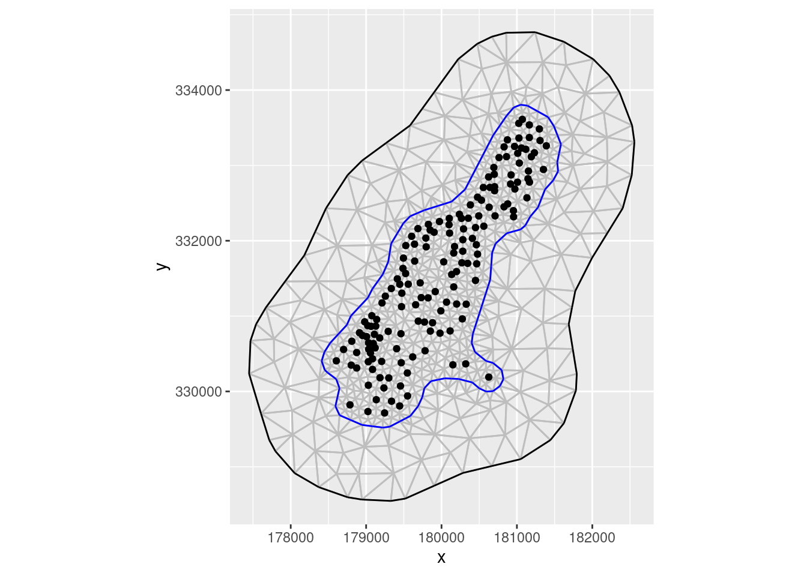
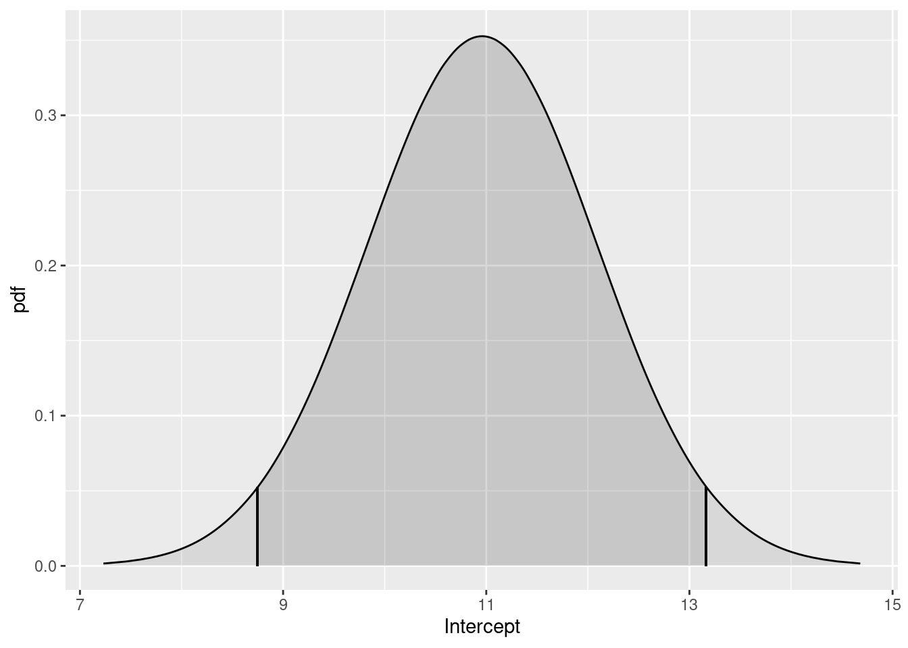
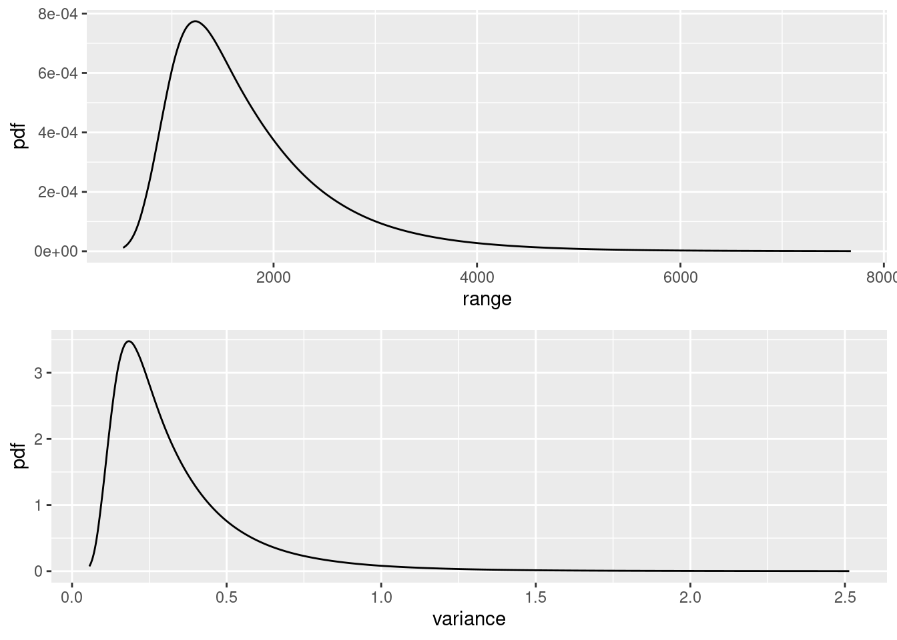
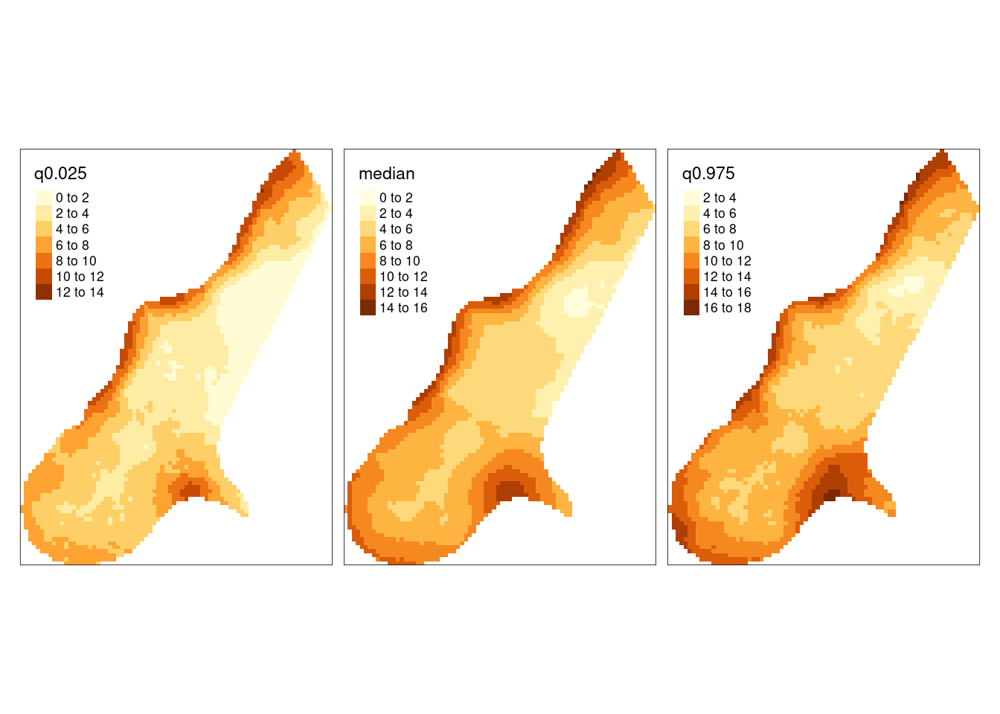
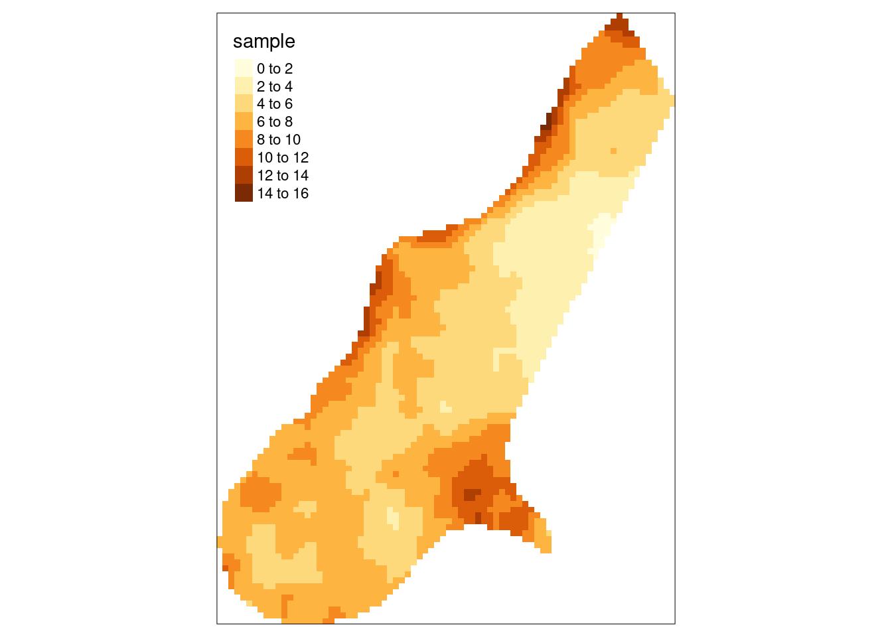
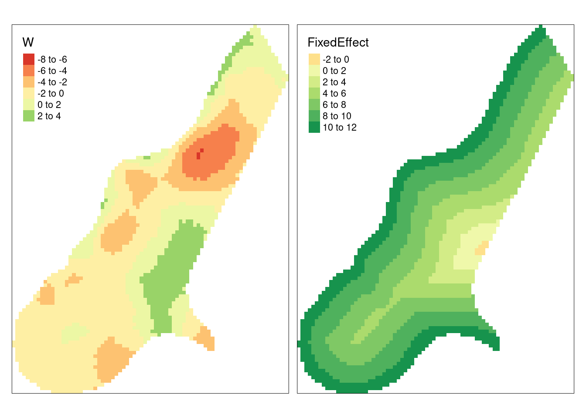

library(INLA)
library(inlabru)
library(dplyr)
library(tmap)
library(gstat) # for the meuse data
library(tmap)
library(ggplot2)inlabru : Convenient fitting of Bayesian digital soil mapping models using INLA-SPDE
1 INRAE, Info&Sols, Orléans, France
2 INRAE, BioSP, Avignon, France
Introduction
Pedometricians are nowadays heavy users of Machine Learning (ML) approaches with on the top the widely used random forest algorithm, see for example (L. Poggio et al. 2021). These algorithms are indeed particularly well adapted to the management of large data sets to map soil properties on large geographic areas in a wide range of situations. The techniques are based on classification and regression algorithms, but they take no account of spatial correlations in residuals (Heuvelink and Webster 2022). This trend towards heavy use of ML tools also seems to be accompanied by a diminished use of geostatistical techniques that often require more computer resources but also profound statistical skills to construct and fine-tune models. Often, prediction is performed in several steps (eg regression or any other machine learning prediction in step 1, followed by spatial kriging of the residuals in step 2), but then an accurate assessment of the prediction uncertainties is difficult since uncertainties from the first step must be propagated through to the second step.
In this paper, we propose to solve these issues by using the fully Bayesian estimation framework based on the integrated nested Laplace approximation (INLA,(Rue, Martino, and Chopin 2009)), combined with the so-called stochastic partial differential equation approach (SPDE, Lindgren, Rue, and Lindström 2011) providing numerically convenient representations of Gaussian processes over continuous space. Over the last decade, the INLA method has become the most popular tool in spatial statistics for estimating a wide variety of Generalized Additive Mixed Models (i.e., Generalized Additive Models with random effects) in a Bayesian setting. It is a relatively easy-to-use alternative to traditional Markov chain Monte Carlo methods by providing off-the-shelf implementation of fast and accurate deterministic approximations of posterior inferences for a large class of models. INLA with SPDE is a powerful combination to handle very large spatial data sets. Models are formulated as Bayesian hierarchical models where covariate effects and Gaussian processes can be additively included in a latent process (that is not directly), whereas the probability distribution of observations can be of various nature (continuous such as gaussian, skew-gaussian, gamma, extreme-value, or discrete such as Poisson, binomial, negative binomial) and its parameters are controlled by the latent process.
INLA-SPDE was already introduced by (Laura Poggio et al. 2016) or (Huang 2017) to the pedometrics community. However, wider use of this approach by the community was probably hindered by the complexity of the INLA R package. Recently, the inlabru R package (Yuan et al. 2017), originally developed with a strong focus on point process models for discrete data in ecology, has integrated a range of functions to help in implementing INLA-SPDE models in a more convenient way through a more ergonomic interface. We propose here to illustrate how this package works by using a simple and classical regression kriging approach as an example.
Set up
Load packages
We use here the set of R packages given in the list below.
The latest version of R (eg >4.2) should be installed on your computer for using the inlabru package. The classical dataset for the Meuse area that we use here is available in the gstatpackage.
The inlabru method is a convenient wrapper for the INLA::inla function and provides multiple enhancements, such as an improved integration of spatial object classes of type sp in R, more convenient syntax for defining the structure of the model, convenient functions to perform Bayesian prediction using simulations from the estimated posterior model, and estimation facilities for certain model structures that are not possible with the classical INLA package.
Point data and rasters
We use the open data meuse from the gstat package
data(meuse)
data(meuse.grid)
str(meuse)'data.frame': 155 obs. of 14 variables:
$ x : num 181072 181025 181165 181298 181307 ...
$ y : num 333611 333558 333537 333484 333330 ...
$ cadmium: num 11.7 8.6 6.5 2.6 2.8 3 3.2 2.8 2.4 1.6 ...
$ copper : num 85 81 68 81 48 61 31 29 37 24 ...
$ lead : num 299 277 199 116 117 137 132 150 133 80 ...
$ zinc : num 1022 1141 640 257 269 ...
$ elev : num 7.91 6.98 7.8 7.66 7.48 ...
$ dist : num 0.00136 0.01222 0.10303 0.19009 0.27709 ...
$ om : num 13.6 14 13 8 8.7 7.8 9.2 9.5 10.6 6.3 ...
$ ffreq : Factor w/ 3 levels "1","2","3": 1 1 1 1 1 1 1 1 1 1 ...
$ soil : Factor w/ 3 levels "1","2","3": 1 1 1 2 2 2 2 1 1 2 ...
$ lime : Factor w/ 2 levels "0","1": 2 2 2 1 1 1 1 1 1 1 ...
$ landuse: Factor w/ 15 levels "Aa","Ab","Ag",..: 4 4 4 11 4 11 4 2 2 15 ...
$ dist.m : num 50 30 150 270 380 470 240 120 240 420 ...str(meuse.grid)'data.frame': 3103 obs. of 7 variables:
$ x : num 181180 181140 181180 181220 181100 ...
$ y : num 333740 333700 333700 333700 333660 ...
$ part.a: num 1 1 1 1 1 1 1 1 1 1 ...
$ part.b: num 0 0 0 0 0 0 0 0 0 0 ...
$ dist : num 0 0 0.0122 0.0435 0 ...
$ soil : Factor w/ 3 levels "1","2","3": 1 1 1 1 1 1 1 1 1 1 ...
$ ffreq : Factor w/ 3 levels "1","2","3": 1 1 1 1 1 1 1 1 1 1 ...The first action is to create sp objects:
a
SpatialPointsDataFramecorresponding to the regression matrix and,the prediction grid, here already provided in the
meuse.grid-object along with covariates.
coordinates(meuse) <- c('x','y')
coordinates(meuse.grid) <- c("x","y")
gridded(meuse.grid) = TRUEFully Bayesian DSM approach
The hierarchical DSM model
We construct a hierarchical model for the soil property \(z(s)\) of a spatial location \(s\) in the framework of the prediction in the presence of exhaustive ancillary information. We will assume the following linkage between model components and observations, where we denote the latent process by \(\eta(s)\).
\[
\eta(s) \sim {\text{Intercept}} + \underbrace{ \sum_{i\in \text{scorpan}}\beta_i z_i(s)}_{\text{Covariates} } +\underbrace{W(s)}_{\text{Spatial Gaussian field}}
\] The spatial field \(W(s)\) captures autocorrelation not explained by the covariates. The latent process \(\eta(s)\) will then be used in the observation-likelihood, which is here chosen as gaussian. We use the | notation to indicate conditioning of the property at the left side of | o the parameters given to the right side of |. This leads to the following hierarchical formulation for the observations,
\[ z(s) | (\eta(s),\theta) \sim \Gamma(\exp(\eta(s_i)), \tau), \] where the Gamma distribution is parametrized in a way such that \(\exp(\eta(s_i))\) is its mean and \(\tau\) is a dispersion parameter related to the variance around the mean. \(\theta = (\theta_\eta, \tau)\) with \(\theta_\eta\) the hyperparameters controlling the linear predictors \(\eta\).
Moreover different observations \(z(s)\) are conditionally independent given the latent process \(\eta(s)\) and the hyperparameters in \(\theta\) controlling it. This means that we include a nugget effect or measurement error with variance \(\sigma^2\) in the model.
In this paper, \(z\) will correspond to the organic matter, om.
Construction of the mesh for the SPDE model
INLA and inlabru use a space triangulation method to estimate spatial Gaussian effects with a Matérn covariance function. The latent spatial Gaussian random field is computed at the mesh nodes by resolving a Stochastic Partial Differential Equation (SPDE), while it is computed elsewhere by linear interpolation between the mesh nodes. The mesh definition is based on a trade-off between the finer spatial scale of the spatial effect (higher resolution) and a lower number of nodes (lower resolution), where having less nodes usually comes with faster calculations. Many applications already come with a regular grid used to discretize space, such as the meuse.grid object here, but often it still makes sense to choose different nodes for the space triangulation used to represent the Gaussian field \(W(s)\), especially in cases where the resolution of the grid from the data is too high for being handled directly by INLA. Below, we present how to build a mesh where the construction of the mesh nodes is initialized using the set of coordinates of the calibration sites. This makes sense since can be useful to have a mesh that is relatively denser in areas with many calibration sites (where data provide more information).
First, we create a matrix xyMesh with coordinates of the sites. Next, we define the boundaries of the domain used for computing the spatial latent effect with the SPDE approach. Generally, it is better to compute an internal boundary (delimiting the study area where we want to predict) and an external boundary (providing an extension zone around the study area that is necessary to avoid strong boundary effects from the SPDE) with different resolutions. The purpose of the extension zone is to push the outer boundary away from the study area, and we can set a lower mesh resolution in this extension zone where we do not want to predict the soil property.
The INLA::inla.mesh.2d function creates a triangle mesh based on initial point locations, specified or automatic boundaries, and mesh quality parameters, in particular the cutoff. This tuning parameter sets the minimum length of edges between two nodes and allows to keep the number of nodes at most moderately high and to avoid instabilities in computations related to the covariance structure due to very high Gaussian correlation at nodes that are very close in space. More information is provided here: https://rpubs.com/jafet089/886687
cutoffValue = 50 # in meter
xyMesh <- rbind(coordinates(meuse)) # transform into matrix
max.edge = diff(range(xyMesh[,1]))/(3*5)
bound.outer = diff(range(range(xyMesh[,1])))/3
bndint <- inla.nonconvex.hull(meuse, convex=-.05)
bndext <- inla.nonconvex.hull(meuse, convex=-.3)
# Use of inla.mesh.2d
mesh = inla.mesh.2d(loc=xyMesh,
boundary = list(int = bndint,
out = bndext),
max.edge = c(1,3)*max.edge,
cutoff = cutoffValue,
crs = meuse@proj4string@projargs)
ggplot() +
gg(mesh) +
gg(meuse) +
coord_equal()
Defining the spatial Gaussian random field \(W(s)\)
We choose the Matérn covariance function for the Gaussian random field because it can be easily used within INLA through the SPDE approach providing convenient numerical representations for estimation with large numbers of observations and mesh nodes. The Matérn covariance in INLA depends on three parameters: - a fractional order parameter *alpha* in the SPDE linked to the smoothness of the solution (which has to be fixed by the user), - a standard deviation parameter *sigma* and, - a spatial correlation parameter known as the *range*.
We specify these parameters in our model by selecting a penalized complexity prior using the INLA::inla.spde2.pcmatern function. For more details, please refer to the introduction to spatial models with INLA in chapter 7 at <https://becarioprecario.bitbucket.io/inla-gitbook/ch-spatial.html>.
matern <-
INLA::inla.spde2.pcmatern(mesh,
alpha = 2,
prior.sigma = c(1, 0.5),# P(sigma > 1) = 0.5
prior.range = c(10000, 0.9) # P(range < 10000 m) = 0.9
)Specify the hierarchical model
We then specify the model components in the cmp object using the convenient inlabru approach. We use as example the following latent effects: an intercept, a linear relationship with the covariate as fixed effect corresponding to the distance to the river, and the Gaussian random field as random effect.
cmp <- om ~
field(coordinates, model = matern) +
Intercept(1) +
dist(dist, model = 'linear' ) Finally, we fit the hierarchical model to the data using the bru function of the inlabru package. This function requires the model components defined earlier (cmp), the dataset (meuse), the mesh (mesh) where the model will be evaluated, and several options to control the INLA algorithm.
For handling the uncertainty stemming from the prior distributions of hyperparameters (here the standard deviation and the correlation range), we use the eb strategy as it is much quicker to compute but a bit less accurate. This empirical Bayes approach sets the hyperparameters to their maximum a posteriori for some of the calculations performed during the estimation algorithm, that is, it uses a mechanism similar to frequentist inference techniques for handling the hyperparameters.
One need to indicate the likelihood family such as gaussian, poisson or binomial. By default family is gaussian. A list of possible alternatives can be seen by typing names(inla.models()$likelihood). It is therefore possible to fit a wide range of model allowing to approach a great diversity of problems in soil science. We use here the gamma family to cope with heavy tail.
fit <- inlabru::bru(
components = cmp,
data = meuse,
family = "gamma",
domain = list(coordinates = mesh),
options = list(
control.inla = list(int.strategy = "eb"),
verbose = FALSE
)
)The summary of the fitted model gives the posterior estimates of fixed effects (intercept and elevation) and hyperparameters (standard deviation and range of the Gaussian random field).
We can look at some summaries of the posterior distributions for the parameters, for example the fixed effects (i.e. the intercept) and the hyper-parameters (i.e. variance of the gaussian likelihood, the precision of the RW1, and the parameters of the spatial field):
summary(fit)inlabru version: 2.7.0
INLA version: 22.12.16
Components:
field: main = spde(coordinates)
Intercept: main = linear(1)
dist: main = linear(dist)
Likelihoods:
Family: 'gamma'
Data class: 'SpatialPointsDataFrame'
Predictor: om ~ .
Time used:
Pre = 1.21, Running = 1.12, Post = 0.061, Total = 2.39
Fixed effects:
mean sd 0.025quant 0.5quant 0.975quant mode kld
Intercept 2.349 0.223 1.912 2.349 2.785 2.349 0
dist -1.311 0.390 -2.076 -1.311 -0.547 -1.311 0
Random effects:
Name Model
field SPDE2 model
Model hyperparameters:
mean sd 0.025quant
Precision parameter for the Gamma observations 14.227 2.487 9.969
Range for field 1760.210 831.848 781.674
Stdev for field 0.555 0.175 0.318
0.5quant 0.975quant mode
Precision parameter for the Gamma observations 14.01 19.738 13.58
Range for field 1558.31 3944.185 1227.82
Stdev for field 0.52 0.996 0.45
Deviance Information Criterion (DIC) ...............: 664.90
Deviance Information Criterion (DIC, saturated) ....: 203.62
Effective number of parameters .....................: 47.08
Watanabe-Akaike information criterion (WAIC) ...: 661.10
Effective number of parameters .................: 35.86
Marginal log-Likelihood: -366.62
is computed
Posterior summaries for the linear predictor and the fitted values are computed
(Posterior marginals needs also 'control.compute=list(return.marginals.predictor=TRUE)')Spatial predictions
Now we use the fit to predict the field on a lattice, and therefore generate a set of results using 100 realizations from the posterior distribution of the model. The approach of using posterior simulation for prediction allows us to appropriately represent the uncertainties in the predictions, and we can choose very flexibly for which parameters and properties we would like to provide predictions. In the predictor formula, we use the exp function to take into account the log-link between the mean of the gamma distribution of the om variable and our linear predictor.
In the predictor formula, we use the exp function to take into account the log-link between the mean of the gamma distribution of the om variable and our linear predictor.
pred <- predict(
fit,
n.samples = 100,
meuse.grid,
~ exp(field + Intercept + dist) ,
num.threads = 2
)Internally, the predict function draws samples from the posterior distribution and then combines them to provide the requested predictions. It is also very simple to perform the sampling step directly to obtain the posterior samples using the generate function. For illustration, we here we draw 5 samples and select the first one.
samp <- generate(fit,
meuse.grid,
~ exp(field + Intercept + dist) ,
n.samples = 5
)
str(samp) num [1:3103, 1:5] 14.3 14.5 14.8 14 14.3 ...pred$sample <- samp[, 1]Plotting results
The different effects
We can plot the posterior densities for the latent effect Intercept and distance to the border.
To this end we will use the inlabru::plot() function,
p1 <- plot(fit, "Intercept")
p2 <- plot(fit, "dist")
multiplot(p1, p2)
As the credibility interval does not contains 0, we can conclude to a significant effect of the fixed effect.
We can also plot the posterior distribution of the parameters of the gaussiant field: range and variance
spde.range.W0 <- spde.posterior(fit, "field", what = "range")
spde.logvar.W0 <- spde.posterior(fit, "field", what = "variance")
range.plot.W0 <- plot(spde.range.W0)
var.plot.W0 <- plot(spde.logvar.W0)
multiplot(range.plot.W0, var.plot.W0)
The spatial predictions with uncertainty
We can plot the median, lower 95% and upper 95% density surfaces as follows (assuming that the predicted intensity is in object pred).
# correction of negative predictions
pred$q0.025[pred$q0.025<0] = 0
tm_shape(pred) +
tm_raster(
c("q0.025","median","q0.975")
)
One realization of the posterior distribution
The sample from the posterior distribution can be mapped as follows.
tm_shape(pred) + tm_raster("sample")
The maps of the random and the fixed effects
Next, we plot the 2 effects of the model:
the spatial Gaussian random field \(W(s)\),
the fixed effect.
pred <- predict(
fit,
n.samples = 100,
meuse.grid,
~ field ,
num.threads = 2
)
fixed <- predict(
fit,
n.samples = 100,
meuse.grid,
~ exp(Intercept + dist) ,
num.threads = 2
)
pred$FixedEffect <- fixed$median
pred$W <- pred$median
tm_shape(pred) +
tm_raster(c("W","FixedEffect"))
Final remarks
The goal of inlabru is to facilitate spatial modeling using integrated nested Laplace approximation via the R-INLA package. The recent developments allow now to construct in a convenient way Bayesian spatial model (INLA-SPDE) of soil properties and their uncertainty. Model components are specified with general inputs and mapping methods to the latent variables, and the predictors are specified via general R expressions.
In their study, Poggio et al. (2016) and Huang et al. (2017) reported that INLA-SPDE became quite slow when estimating the posterior marginal distributions of the environmental variables associated with large datasets. When the number of observations is huge, it is important to mention that one can improve the performance of the high-dimensional matrix computations conducted in INLA by using the PARDISO solver library. It is already full included in the standard INLA installation but has to be activated through a licence key. To activate it (free for non commercial uses), go to https://www.pardiso-project.org/r-inla/#license to obtain the license, which will take you at most several minutes. Also, you can type inla.pardiso() at the R command line for viewing the (very simple) instructions on how to enable the PARDISO sparse library. Moreover, new developments are underway for especially data-rich model to achieve even faster inference, improved numerical stability and scalability using variational approximation (Van Niekerk et al. 2023).
Heuvelink and Webster (2022) listed a set of challenges for pedometricians and spatial statisticians to strengthen the role of spatial statistics. Without being able to solve all of them, it seems to us that INLA by providing a fully Bayesian modelling in a rapid and convinent way can provide some answers to some of them, e.g., the better uncertainty quantification, the change of support, incorporating attribute and positional measurement uncertainty.
Code availability
The code is also available on github : https://github.com/nsaby/pedometron042023
More codes are available here: https://inlabru-org.github.io/inlabru/articles/web/random_fields_2d.html
References
Heuvelink, Gerard B. M., and Richard Webster. 2022. “Spatial Statistics and Soil Mapping: A Blossoming Partnership Under Pressure.” Spatial Statistics 50: 100639. https://doi.org/https://doi.org/10.1016/j.spasta.2022.100639.
Huang, Malone, J. 2017. “Evaluating a Bayesian modelling approach (INLA-SPDE) for environmental mapping.” Science of The Total Environment 609: 621--632.
Lindgren, Finn, Håvard Rue, and Johan Lindström. 2011. “An explicit link between Gaussian fields and Gaussian Markov random fields: the stochastic partial differential equation approach.” Journal of the Royal Statistical Society: Series B (Statistical Methodology) 73 (4): 423–98.
Poggio, Laura, Alessandro Gimona, Luigi Spezia, and Mark J Brewer. 2016. “Bayesian spatial modelling of soil properties and their uncertainty: The example of soil organic matter in Scotland using R-INLA.” Geoderma 277: 69–82.
Poggio, L., L. M. de Sousa, N. H. Batjes, G. B. M. Heuvelink, B. Kempen, E. Ribeiro, and D. Rossiter. 2021. “SoilGrids 2.0: Producing Soil Information for the Globe with Quantified Spatial Uncertainty.” SOIL 7 (1): 217–40. https://doi.org/10.5194/soil-7-217-2021.
Rue, Håvard, Sara Martino, and Nicolas Chopin. 2009. “Approximate Bayesian inference for latent Gaussian models by using integrated nested Laplace approximations.” Journal of the Royal Statistical Society: Series b (Statistical Methodology) 71 (2): 319–92.
Van Niekerk, Janet, Elias Krainski, Denis Rustand, and Håvard Rue. 2023. “A New Avenue for Bayesian Inference with INLA.” Computational Statistics & Data Analysis 181: 107692. https://doi.org/https://doi.org/10.1016/j.csda.2023.107692.
Yuan, Y., F. E. Bachl, F. Lindgren, D. L. Brochers, J. B. Illian, S. T. Buckland, H. Rue, and T. Gerrodette. 2017. “Point Process Models for Spatio-Temporal Distance Sampling Data from a Large-Scale Survey of Blue Whales.” https://arxiv.org/abs/1604.06013.